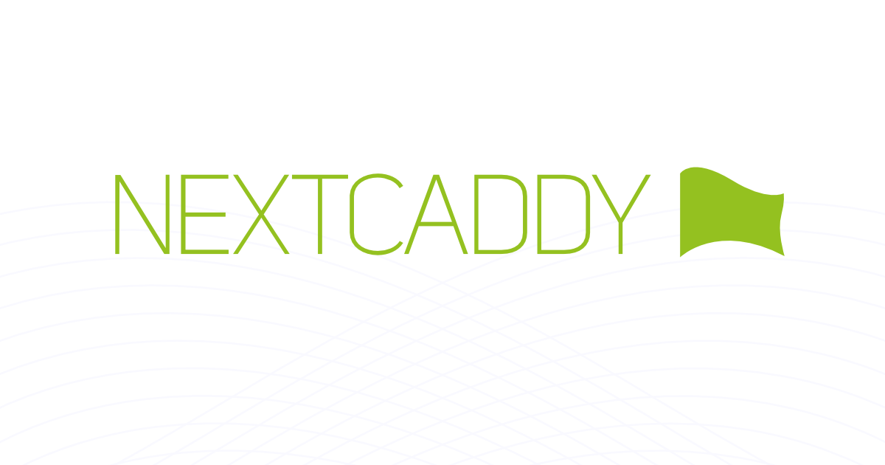
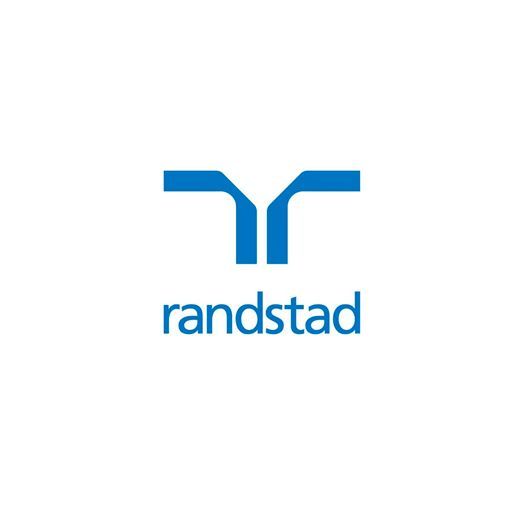
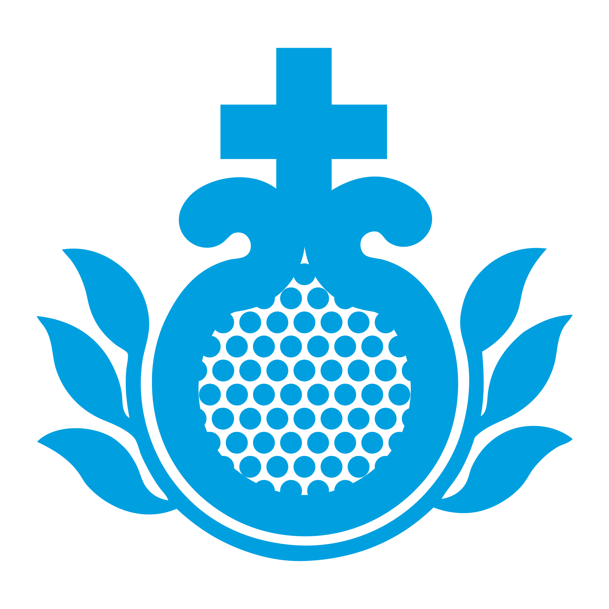
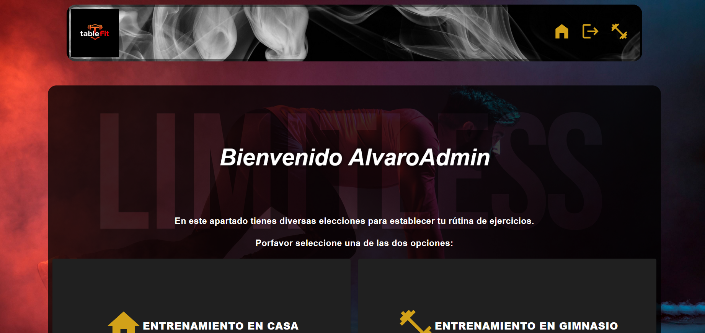
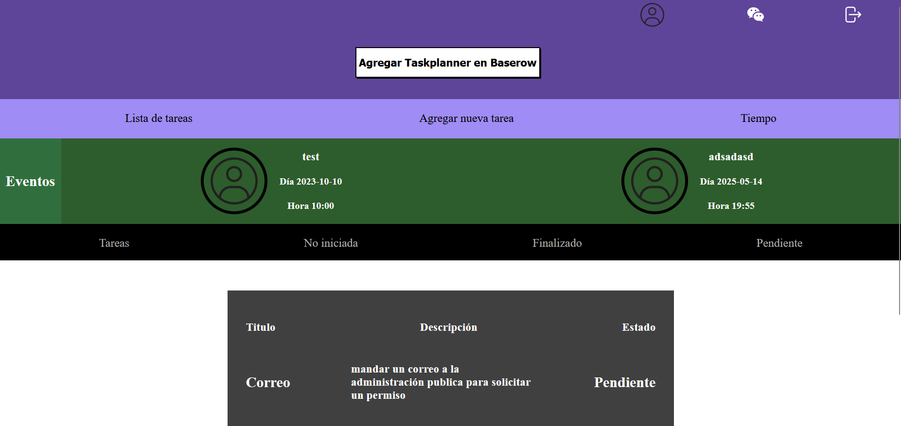
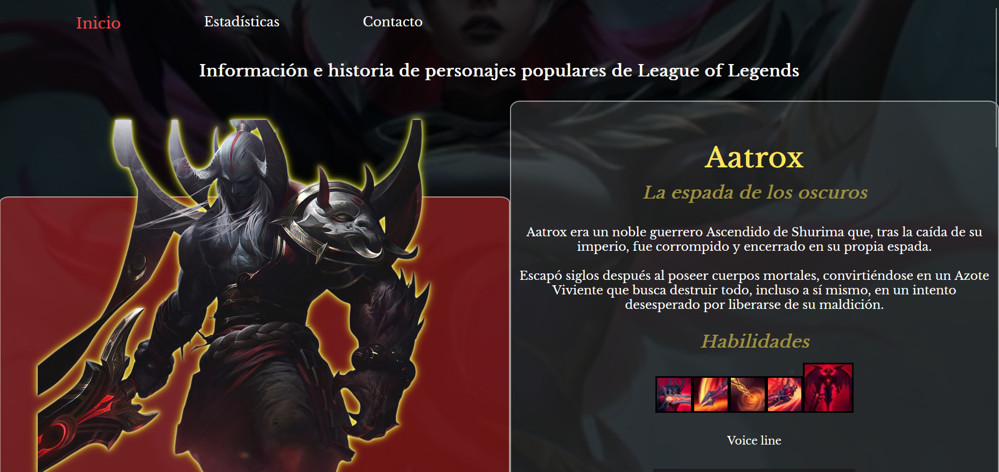

Experiencia
Green Slope
- Realicé análisis profesionales del mercado y la competencia
- Realicé pruebas (testing) e implementaciones generales
- Diseñé interfaces utilizando Figma
- Implementé interfaces dinámicas y adaptativas utilizando tecnologías como React.js, Tailwind CSS, Sass y DaisyUI, asegurando una experiencia de usuario moderna y accesible.
- Optimizando la experiencia del usuario
- Propuse soluciones tecnológicas viables mediante presentaciones técnicas, facilitando la toma de decisiones estratégicas en el equipo de desarrollo
- Realicé análisis e investigación de tecnologías emergentes, evaluando su aplicabilidad en proyectos actuales y futuros
- Desarrollé funcionalidades clave para la web oficial, incluyendo el seguimiento del comportamiento del usuario y el cálculo de la distancia geográfica entre dos puntos en un mapa interactivo
Randstad / ONU
- Reparación, mantenimiento preventivo y verificación del estado de impresoras durante la Cumbre de la ONU en Sevilla.
- Instalación y configuración de equipos tecnológicos: docks, BRS y portátiles.
- Resolución de incidencias técnicas de forma proactiva y eficaz, asegurando la continuidad operativa del evento.
- Comunicación fluida en inglés con representantes corporativos de la ONU para coordinar y agilizar soluciones.
- Recopilación de información sobre las distintas entidades presentes, facilitando la derivación de incidencias fuera de nuestro ámbito (material de oficina, catering, etc.).
- Gestión de inventario y control de equipos tecnológicos distribuidos en el evento.
- Atención e información directa a visitantes sobre localizaciones, actividades y asistencia general en el recinto.
- Coordinación efectiva con compañeros para priorizar y resolver incidencias con rapidez.
- Ejercicio de un rol de liderazgo como referente principal en el Pabellón 1, gestionando solicitudes, consultas y derivaciones técnicas.
Hospital San Juan de Dios
- Gestioné trámites administrativos relacionados con la estancia hospitalaria de pacientes.
- Trabajé eficientemente bajo presión en un entorno hospitalario de ritmo acelerado.
- Desarrollé habilidades para manejar situaciones emocionales con pacientes y familiares.
- Mantuve la organización y la calma en momentos de estrés, priorizando la atención y el trato humano.
Proyectos
Proyecto freelance
Aplicación web que permite crear tablas de ejercicios personalizadas para gimnasio o entrenamiento en casa, potenciadas con inteligencia artificial.
- Backend desarrollado en Node.js con arquitectura Modelo-Vista-Controlador, JWT para autenticación, Helmet y CORS para seguridad, WebSockets para comunicación en tiempo real y MongoDB como base de datos. Implementación de CRUD sobre varias colecciones, middlewares y validaciones personalizadas. Gestión de subida de imágenes y despliegue en Render utilizando variables de entorno.
- Frontend en React, empleando React-Redux para el estado global, react-hook-form para formularios, hooks personalizados, Providers y librerías como LazyLoad, Material UI y React Router para el enrutado.
- El sistema genera rutinas dinámicas basadas en objetivos, nivel y equipamiento disponible, ofreciendo una experiencia interactiva y adaptable para el usuario.
Taskplanner con ws
Aplicación web para la gestión de tareas que permite visualizar y organizar actividades en diferentes estados: pendientes, en progreso, finalizadas y no iniciadas.
- Backend desarrollado en Node.js con WebSockets para comunicación en tiempo real. Arquitectura Modelo-Vista-Controlador con autenticación mediante JWT, control de permisos según rol de usuario y gestión de subida y modificación de imágenes de perfil. Integración de APIs externas para mostrar el clima de la ubicación del usuario (previa solicitud de permisos de geolocalización).
- Frontend construido con HTML, CSS y JavaScript sin frameworks, aplicando manipulación del DOM, peticiones asíncronas (Fetch API) y renderizado dinámico de tareas y eventos. La interfaz presenta un tablero que clasifica las tareas por estado y muestra eventos creados por usuarios junto con su nombre y foto de perfil.
- El sistema permite que ciertos roles puedan crear eventos visibles para toda la comunidad, fomentando la colaboración y manteniendo la información sincronizada en tiempo real.
Proyecto pokemon API externa

Aplicación web que realiza diferentes tipos de peticiones a la PokéAPI para mostrar información de forma dinámica y filtrada.
- Frontend desarrollado con HTML, CSS y JavaScript sin frameworks, utilizando Fetch API y manejo de promesas para consumir datos en tiempo real.
- Listado dinámico de Pokémon en un elemento datalist para facilitar la búsqueda.
- Consulta de todos los movimientos que un Pokémon puede aprender.
- Visualización detallada del Pokémon seleccionado, incluyendo tipo, sprite e información básica.
- Interfaz optimizada para una navegación ágil y organizada, separando cada tipo de consulta en secciones claras para mejorar la experiencia del usuario.
Proyecto diseño
Proyecto de maquetación y diseño web inspirado en el universo de League of Legends, enfocado en la experiencia visual y estética.
- Frontend desarrollado únicamente con HTML y CSS, aplicando diseño responsive para adaptarse a diferentes dispositivos.
- Uso de tipografías personalizadas, paleta de colores y recursos visuales del juego para lograr una ambientación inmersiva.
- Implementación de efectos y animaciones con CSS transitions y hover effects para dar dinamismo a la navegación.
Educación
Máster Fullstack Developer con IA
-
Evolve Academy, Madrid (2025)
Grado Superior en Desarrollo de Aplicaciones Multiplataforma
-
Centro ITEP, Sevilla (2023)
Grado Superior en Asistencia a la Dirección
-
Escuela Mercantil, Sevilla (2021)
Certificaciones
Máster Fullstack Developer con IA
-
27039119
British Council Aptis ESOL International Certificate Level 1
-
B2 (BC20000252116)